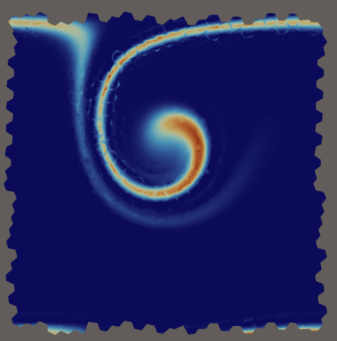

|
Vulpes
0.1.0
Virtual and Discontinuous Polytopal Elements Library
|
|
Vulpes
0.1.0
Virtual and Discontinuous Polytopal Elements Library
|
Author: Pedro Peixoto ppeix.nosp@m.oto@.nosp@m.usp.b.nosp@m.r
This tutorial discusses the specific formulation currently assembled in Vulpes in examples/assembly/advection/scalar/advection_dg_assembly.hpp.
The advection example is split into two subfolders:
Reference for notation and DG formulation style: F. Brezzi, L. D. Marini, and E. Suli, Discontinuous Galerkin methods for first-order hyperbolic problems, Math. Models Methods Appl. Sci. 14(12), 2004.
Disclaimer: we will abuse some of the notation to allow faster understanding of the ideas. Full mathematical formulations should be checked in the associated papers.
Consider the advection problem
\[ u_t + \nabla \cdot (c u) = 0 \quad \text{in } \Omega \times (0,T], \]
with biperiodic boundary conditions on \([0,1] \times [0,1]\) and initial condition
\[ u(0,x) = u_0(x). \]
Here \(c=c(x)\) may be constant or space-dependent. For the current variable velocity experiment in Vulpes, the velocity is written as
\[ c(x,y) = (c_x,c_y) + c_{\mathrm{var}}(x,y), \]
where \((c_x,c_y)\) is the user-selected constant background drift, and \(c_{\mathrm{var}}\) is derived from the stream function
\[ \psi(x,y)=\frac{1}{\pi}\sin^2(\pi x)\sin^2(\pi y), \]
\[ c_{\mathrm{var},x} = \frac{\partial \psi}{\partial y} = \sin^2(\pi x)\sin(2\pi y), \qquad c_{\mathrm{var},y} = -\frac{\partial \psi}{\partial x} = -\sin(2\pi x)\sin^2(\pi y). \]
Since
\[ \nabla \cdot c = \nabla\cdot(c_x,c_y) + \nabla\cdot c_{\mathrm{var}} = 0 + 0 = 0, \]
the non-conservative form \(u_t + c\cdot\nabla u = 0\) and the conservative form \(u_t + \nabla\cdot(cu)=0\) are equivalent for this specific velocity field.
Let \(\mathcal{T}_h\) be a mesh and let
\[ V_h = \{ v \in L^2(\Omega) : v|_K \in \mathbb{P}_p(K) \text{ for all } K\in\mathcal{T}_h \}. \]
On each cell \(K\), multiplying by a test function \(v \in V_h\) and integrating by parts gives
\[ \int_K u_t v\,dx - \int_K u\, c\cdot\nabla v\,dx + \int_{\partial K} (c\cdot n) u v\,ds = 0. \]
In DG, the boundary flux is replaced by a numerical flux. For linear advection, the standard upwind flux is
\[ \widehat{f}(u,u';n) = (c\cdot n) u^{\mathrm{up}}, \]
where \(u^{\mathrm{up}}\) is the value from the upwind side of the face, with \(u'\) the value at the neighbour cell \(K'\). This can be written as
\[ \widehat{f}(u,u';n) = w_K(x)u - w_{K'}(x)u', \]
where
\[ w_K(x) = \tfrac12\bigl(|c(x)\cdot n| + c(x)\cdot n\bigr)=\max(c(x)\cdot n,0), \]
with the normal referring to the outward normal with respect to cell \(K\).
A direct way is to simply define the boundary term with respect to the flux as
\[ \int_{\partial K} (c\cdot n) u v\,ds = \int_{\partial K} \widehat{f}(u,u';n) v\,ds = \\ = \int_{\partial K} (w_K(x)u - w_{K'}(x)u') v\,ds \\ = \int_{\partial K} (w_K(x)uv - w_{K'}(x)u'v )\,ds \\ = \int_{\partial K} w_K(x)uv\,ds - \int_{\partial K} w_{K'}(x)u'v\,ds \]
that is, in the loop for a cell edge, we must evaluate these 2 integrals, where one refers to the actual cell value, and the other to the neighbour value. Here we note that we need the \(w_{K'}\), which is of the neighbour cell. But since the normals are negative of each other, \(n=-n'\), we have that
\[ w_{K'}(x) =\max(c(x)\cdot n',0) = \max(c(x)\cdot (-n),0) = - \min(c(x)\cdot n,0), \]
This leads to the final scheme, defining this term as
\[ \int_{\partial K} (c\cdot n) u v\,ds = \int_{\partial K} \max(c(x)\cdot n,0) uv + \sum_{e\subset \partial K} \int_e \min(c(x)\cdot n,0) u'v \]
where we explicitly highlight that there will be contributions of different neighbour edges.
The previous expression uses the neighbour trial value \(u^{K'}\). For cell-by-cell assembly, it is useful to rewrite the same edge coupling as a contribution to the neighbour test function \(v^{K'}\) while keeping the trial value as \(u^K\).
Starting from the cell weak form with upwind flux,
\[ \int_K u_t v\,dx = \int_K u\, c\cdot\nabla v\,dx - \int_{\partial K} \widehat f(u^K,u^{K'};n_K)\,v^K\,ds, \]
and using
\[ \widehat f(u^K,u^{K'};n_K)=w_K u^K - w_{K'}u^{K'}, \]
we get
\[ \int_K u_t v\,dx = \int_K u\, c\cdot\nabla v\,dx - \int_{\partial K} w_K u^K v^K\,ds + \sum_{e\subset\partial K}\int_e w_{K'} u^{K'} v^K\,ds. \]
Now sum over all cells and relabel the dummy pair \((K,K')\leftrightarrow(K',K)\) in the last double sum. Since each interior face appears once from each side, this gives the equivalent identity
\[ \sum_K\sum_{e\subset\partial K}\int_e w_{K'} u^{K'} v^K\,ds = \sum_K\sum_{e\subset\partial K}\int_e w_K u^K v^{K'}\,ds. \]
Substituting back, we obtain the equivalent cell-wise form used in Vulpes:
\[ \int_K u_t v\,dx = \int_K u\, c\cdot\nabla v\,dx - \int_{\partial K} w_K u^K v^K\,ds + \sum_{e\subset \partial K} \int_e w_K u^K v^{K'}\,ds, \]
where \(K'\) is the neighbor across face \(e\). A key difference here is that we only use \(w_K\), not \(w_{K'}\) anymore, which facilitates the expression handling that we will see later. This is the form most closely matching the Vulpes implementation.
Vulpes assembles by looping over cells and then over their neighbor faces, not by looping over the global set of faces directly.
For a given cell \(K\) with outward normal \(n_K\), define
\[ \beta_K^+(x) = \max(c(x)\cdot n_K,0). \]
Then the semidiscrete DG system is
\[ M \frac{dU}{dt} = A U, \]
with contributions assembled cellwise from:
\[ \text{Cell}(K) = \int_K u_h\, c\cdot\nabla v_h\,dx, \]
\[ \text{FaceDiag}(K) = -\int_{\partial K} \beta_K^+ u_h^K v_h^K\,ds, \]
\[ \text{FaceNeigh}(K,e) = \int_e \beta_K^+ u_h^K v_h^{K'}\,ds. \]
So the Vulpes operator is built as
\[ A = \sum_{K\in\mathcal{T}_h} \text{Cell}(K) + \sum_{K\in\mathcal{T}_h} \text{FaceDiag}(K) + \sum_{K\in\mathcal{T}_h} \sum_{e\subset\partial K\cap\mathcal{F}_h} \text{FaceNeigh}(K,e). \]
For periodic meshes, there are no external boundary terms; every face has a neighbor under the periodic connectivity.
From examples/assembly/advection/scalar/advection_dg_assembly.hpp, the current code defines:
wf_mass): \[ \int_K u v\,dx. \]
wf_advec_cell):\[ \int_K u\, c\cdot\nabla v\,dx. \]
wf_advec_face_diag):\[ -\int_{\partial K} \beta_K^+ u v\,ds. \]
wf_advec_face_neigh):\[ \int_e \beta_K^+ u v_{\mathrm{neigh}}\,ds. \]
The assembled semidiscrete system is therefore
\[ M \dot{U} = A U + F(t), \]
with \(F(t)=0\) in this pure advection example.
The velocity field is defined in examples/assembly/advection/scalar/advection_physics.hpp:
\[ c(x,y) = (c_x, c_y). \]
Variable mode uses a constant background drift plus a divergence-free rotational component from streamfunction
\[ \psi(x,y) = \frac{1}{\pi}\sin^2(\pi x)\sin^2(\pi y). \]
The rotational component is
\[ c_{\mathrm{var},x} = \frac{\partial \psi}{\partial y} = \sin^2(\pi x)\sin(2\pi y), \qquad c_{\mathrm{var},y} = -\frac{\partial \psi}{\partial x} = -\sin(2\pi x)\sin^2(\pi y). \]
Total velocity in variable mode:
\[ c(x,y) = (c_x, c_y) + c_{\mathrm{var}}(x,y), \]
where \((c_x,c_y)\) are the user parameters from JSON.
The CFL estimate uses a safe bound
\[ |c| \le \sqrt{c_x^2+c_y^2} + 1. \]
From the build directory:
Output is written under output/advection/ and includes solution snapshots, mesh export, and velocity export.

Figure: Snapshot of the variable velocity case with P3 and Voronoi meshes using cx=0.5, cy=0.1, CFL=0.3 at time 1.8.